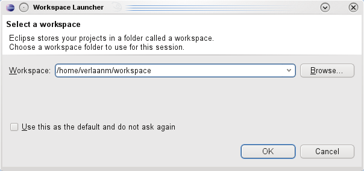
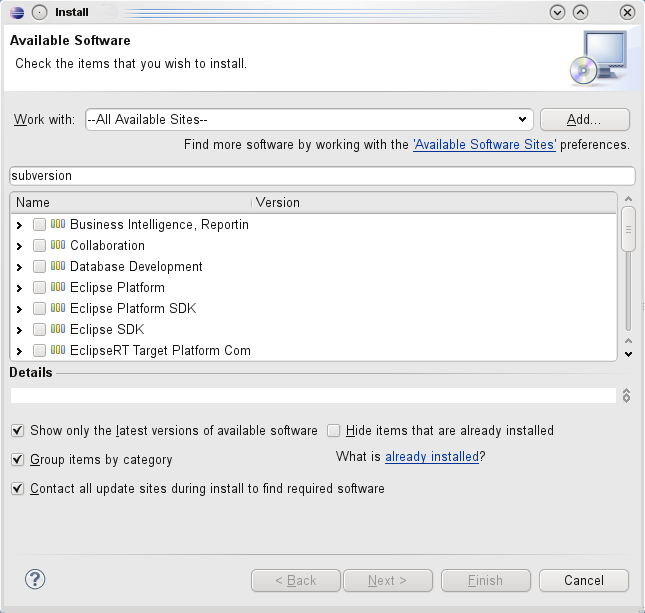
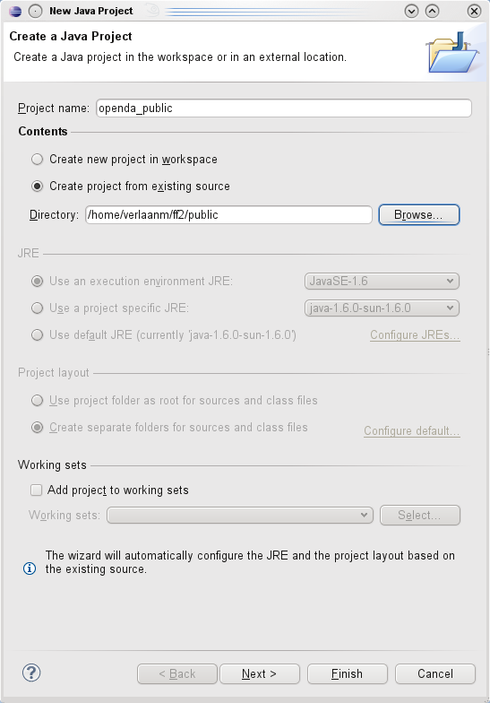
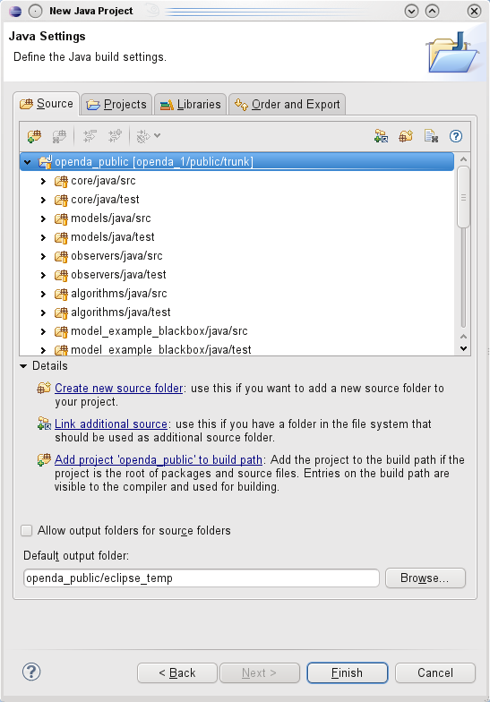
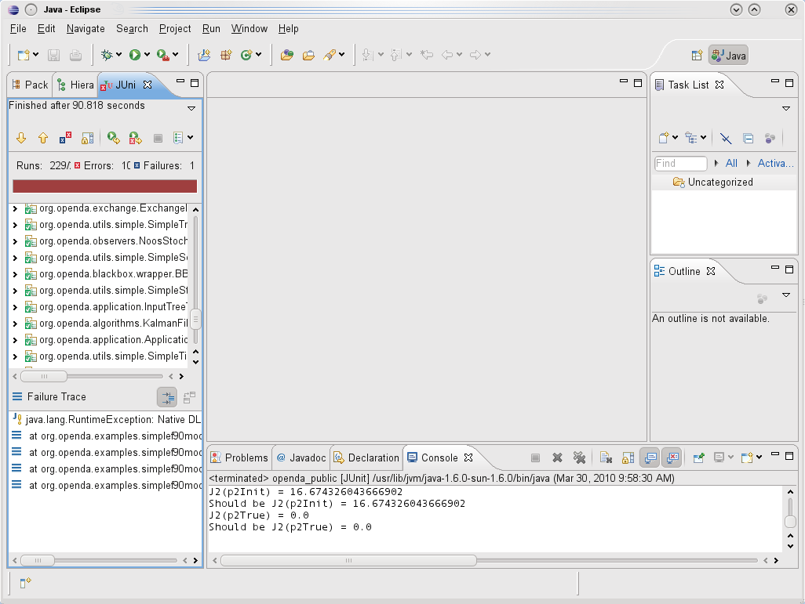
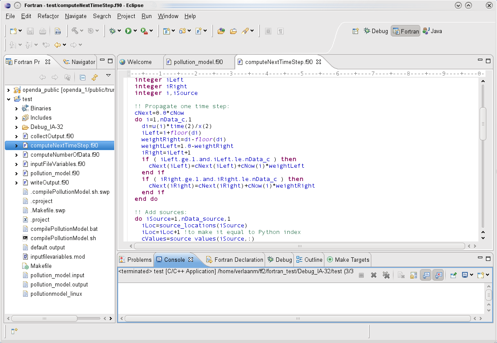
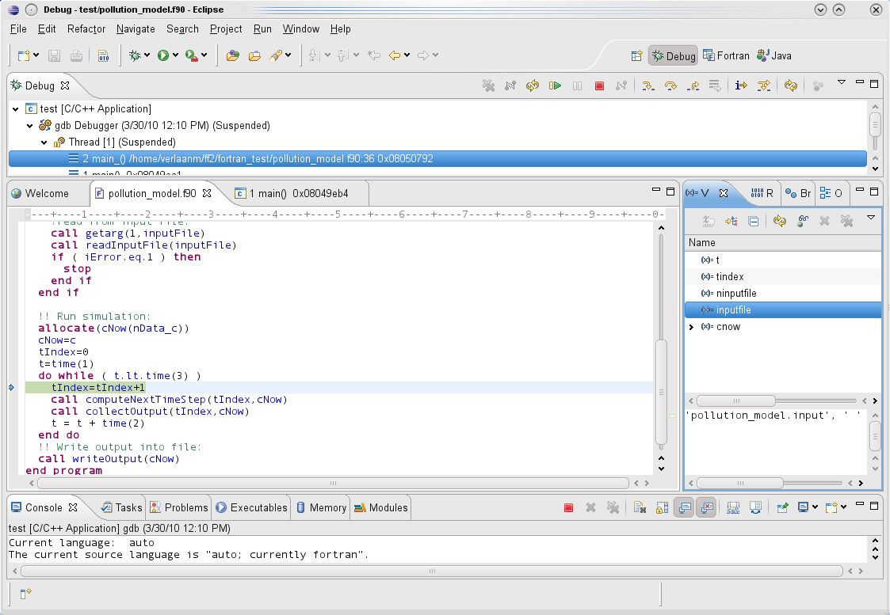

Installation of Eclipse for Java
- Install sun Java version 1.6, 32-bit version for Windows, 32- or 64-bit version for Linux.
Other versions and vendors may work, but your
mileage may vary. Note that OpenDA does not yet support 64-bit for Windows, because all binaries for native libraries were compiled as 32-bit.
The reason is that the type (32-bit or 64-bit) of the Java virtual machine and the native libraries should match.
(Linux: On rpm-based distro's, you can check with the following command if the sun jvm is
already installed: rpm -qa |grep -i sun The reply may look like java-1_6_0-sun-1.6.0.u18-0.1.1.i586)
- (Linux:) Use your package manager to install ant.
- (Windows:) Eclipse comes with ant.
- Download Eclipse from http://www.eclipse.org/downloads/ The remainder of
this installation will assume you download the version for “Java Developers”. When you prefer another option you may
need to install other additional packages.
- (Linux:) Unpack the zip file with tar -xzf
eclipse-java-galileo-SR2-linux-gtk.tar.gz or e.g. with a gui like ark.
- (Windows:) Extract the content of the zip file (eclipse-java-galileo-SR2-win32.zip)
- Now start Eclipse with eclipse/eclipse.
It may be conventient to create an alias or link to your desktop or something similar here. Eclipse will now start and ask for
the location of your workspace. For now you can accept the suggested directory and check the “Use this as the default and
do not ask again”. You can change this later from the preferences dialog.
- Next install the Subversion modules for Eclipse. For this we use the built in installation menu, under
“help--->Install software”. There select work with and copy paste the following url there http://subclipse.tigris.org/update_1.6.x. A list of additional subverions
modules should now appear. Select all listed modules (3) and finish the installation.
Note: If you want to develop native code (fortran, c or c++) some additional modules are needed, see below.





Development of native code (Fortran, C or C++)
If you are going to develop native code on Windows it is recommended to use the Microsoft Visual Studio
(see Building the OpenDA native source code on Windows).
On linux you may want to use Eclipse for native code development. In that case, follow the steps below.
Installation of Eclipse on Linux for native code development
- Add the following packages in your package manager: gcc, automake,
- Install the Intell Fortran compiler (tested with version 11.0) and include the startup script in your startup. This
typically mean adding the line
“. /opt/intel/Compiler/11.0/081/bin/ifortvars.sh ia32” to your .bashrc file.
- Add some additional modules to Eclipse. Select “Help ---> Install software”. Then paste the following url
http://download.Eclipse.org/tools/ptp/releases/galileo and select photran.
- Consult the documentation (See http://wiki.eclipse.org/PTP/photran/documentation/photran5 ) for how to use this module.
In short: create a new project from an existing makefile, i.e. “File ---> New ---> Fortran project”
Note: To be able to run native code from java, the native libraries (*.so) must be included in the "load library path".
To do this, extend the LD_LIBRARY_PATH before starting Eclipse:


Installation for Windows
Yet to be documented. As soon as the source code will be made available, information on how to develop in java on Windows will be put here.